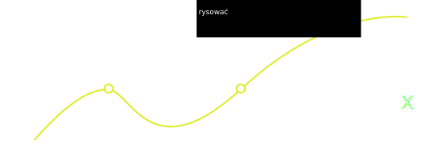
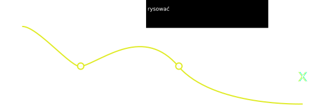
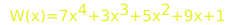

a)

b)

Wielu uczniów ma problemy z prawidłowym zrozumieniem tego terminu oraz z zastosowaniem go w zadaniach, stąd pomysł na jego przybliżenie. W zadaniach maturalnych często występują zadania, w których należy zastosować ten schemat. Dzięki tej stronie nie będziesz miał problemu z ich rozwiązywaniem.
Schemat Hornera - jest to sposób obliczania wartości wielomianu dla danego argumentu x=t.Algorytm ten wykorzystuje minimalną liczbę mnożeń.Jest to również algorytm dzielenia wielomianu W(x) przez dwumian w postaci (x-t)
Brytyjski matematyk. W wieku 14 lat został asystentem nauczyciela w szkole w Bristolu. W 1809 założył własną szkołę w Bath. Przypisuje się mu opracowanie algorytmu nazywanego dziś schematem Hornera pozwalającego łatwo obliczać wartość wielomianu, który znany był Chińczykom pięćset lat wcześniej. W 1834 opatentował zoetrop.
Aby nauczyć się rozwiązywać równania i nierówności oraz dzielić wielomian przez dwumian metodą schematu Hornera musisz najpierw poznać trochę teorii.
Pierwiastkiem wielomianu W(x) nazywamy liczbę rzeczywistą a, dla której W(a)=0.
Liczba pierwiastków niezerowego wielomianu W(x) jednej zmiennej rzeczywistej jest nie większe niż stopień wielomianu W(x).
Wielomian W(x) jest podzielny przez wielomian P(x) (który jest różny od wielomianu zerowego) wtedy i tylko wtedy, gdy istnieje taki wielomian Q(x), że: W(x)=P(x)•Q(x). Wówczas wielomian Q(x) nazywamy ilorazem wielomianu W(x) przez P(x). Wielomian P(x) jest dzielnikiem wielomianu W(x).
ZADANIEUdowodnij, że wielomian Q(x)=x2-4, jest ilorazem wielomianu W(x)=x3+x2-4x-4 przez P(x)=x+1. Rozwiązanie: Z twierdzenia o podzielności wielomianów wiemy, że aby wielomian P(x) był podzielny przez Q(x) musi być spełniony warunek:W(x)=P(x)•Q(x) Zatem:P(x)•Q(x)=(x+1)(x2-4)=x3-4x+x2-4=x3+x2-4x-4=W(x) c.n.d.
Jeśli W(x) oraz P(x) są wielomianami i P(x) nie jest wielomianem zerowym, to istnieją takie dwa wielomiany Q(x) oraz R(x), że: W(x)=P(x)•Q(x)+R(x), gdzie stopień wielomianu R(x) jest mniejszy od stopnia wielomianu P(x). Jeżeli wielomian W(x) jest podzielny przez wielomian P(x), to R(x) jest wielomianem zerowym.
Liczba a jest pierwiastkiem wielomianu W(x) wtedy i tylko wtedy, gdy wielomian W(x) jest podzielny przez dwumian x - a.Z twierdzenia wynika również, że reszta z dzielenia wielomianu W(x) przez dwumian (x-a) jest równa W(a), czyli wartości wielomianu dla x=a.
ZADANIESprawdź, czy wielomian W(x)=x3-2x2+3x-2 jest podzielny przez dwumian x-1. Rozwiązanie: Zgodnie z twierdzeniem Bézoute'a jeśli wielomian W(x) jest podzielny przez dwumian x-1, to liczba 1 jest pierwiastkiem wielomianu (wielomian przyjmuje dla argumentu x=1 wartość 0). Sprawdźmy to: W(1)=13-2•12+3•1-2=1-2+3-2=0 Widzimy więc, że wielomian W(x) jest podzielny przez dwumian x-1.
Jeżeli wielomian , gdzie an≠0 i a0≠0, o współczynnikach całkowitych ma pierwiastek wymierny, który można zapisać w postaci ułamka nieskracalnego, to licznik tego ułamka jest dzielnikiem wyrazu wolnego a0, natomiast mianownik - dzielnikiem współczynnika an przy najwyższej potędze zmiennej.
Poniższa tabelka przedstawia jak uzupełnia się pola dla wielomianu Wn(x) i argumencie x=t (zapis ogólny).
| Schemat Hornera | an | an-1 | ... | a1 | a0 |
| a | bn=an | bn-1=bn•a+an-1 | ... | b1=bn-2,3...•a+a1 | b0=b1•a+a0 |
liczby an,an-1,........,a0 - współczynniki wielomianu, współczynnikiem an nazywamy wyraz przy najwyższej potędze zmiennej wielomianu, n - stopień wielomianu, a - pierwiastek dwumianu
Film instruktażowy wypełniania tabelki:
(Film stworzony przez InfoPlus. Umieszczony na podstawie standardowej licencji YouTube).
Za pomocą schematu Hornera podziel wielomian W(x)=x4+3x3+x-3 przez dwumian x+2.
| W(x) | 1 | 3 | 0 | 1 | -3 |
| -2 | 1 | 1 | -2 | 5 | -13 |
Wynik: Po podzieleniu wielomianu W(x)przez dwumian x+2 otrzymujemy: Wielomian P(x) o stopień niższy niż wielomian W(x) i resztę z dzielenia tego wielomianu. Odczytujemy z tabeli współczynniki wielomianu P(x) oraz resztę z dzielenia: P(x)=x3+x2-2x+5. Reszta z dzielenia wielomianu W(x) przez dwumian x+2 wynosi: R=-13. Zatem możemy zapisać, że: W(x)=P(x)(x+2)+R, czyli: W(x)=(x3+x2-2x+5)(x+2)-13.
Podstawowym zastosowaniem schematu Hornera jest obliczanie wartości wielomianów dla ustalonego x=t.

Obliczanie wartości wielomianu dla argumentu t=1. 1) Wyłączamy wspólny czynnik przed nawias, w tym przypadku jest to x. 2) Wyłączamy wspólny czynnik z trzech pierwszych elementów w nawiasie. 3) Podstawiamy za x podaną wartość t, czyli 1.Otrzymujemy wynik.
Częściej spotykany jest jednak zapis w tabelce, który znajdziesz niżej.
Najczęściej jednak do obliczania wartości wielomianu o argumencie x=t używa się zapisu w tabelce (tego samego, którego używamy podczas dzielenia wielomianu przez dwumian), dzięki której obliczymy wartość wielomianu o wiele szybciej.
Obliczanie wartości wielomianu  dla t=1. (Kliknij na pole, aby dowiedzieć się więcej).
| Schemat Hornera | 7 | 3 | 5 | 9 | 1 |
| x=1 | 7 | 10 | 15 | 24 | 25 |
Wynik:W(1)=25 Jak widać wynik wyszedł taki sam jak poprzednio.
Lista kroków:
Lista kroków:
ZADANIE Rozwiąż równanie: x3−3x+2=0 wyraz wolny: 2, podzielniki wyrazu wolnego {1, −1, 2, −2} W(1)=13-3•1+2=1-3+2=0 (Nie musimy dalej sprawdzać, ponieważ W(1)=0, czyli x=1 jest pierwiastkiem.) W(-1)=-13-3•(-1)+2=-1+3+2=4 W(2)=23-3•2+2=8-6+2=4 W(-2)=-23-3•(-2)+2=-8+6+2=0 (-2 też jest pierwiastkiem, więc od nas zależy, który wybierzemy.) Zatem aby rozwiązać równanie musimy podzielić x3−3x+2=0 przez dwumian (x-1) Aby to zrobić tworzymy taką samą tabelkę, którą stosowaliśmy do obliczania wartości wielomianu dla podanego argumentu.
| W(x) | 1 | 0 | -3 | 2 |
| 1 | 1 | 1 | -2 | 0 |
Lista kroków:
ZADANIE Rozwiąż nierówność: x3+5x2+8x+4≥0 Oznaczmy wielomian jako: W(x)=x3+5x2+8x+4 wyraz wolny: 4, podzielniki wyrazu wolnego {1, -1, 2, −2, 4, -4} W(1)=13+5•12+8•1+4=18 W(-1)=(-1)3+5•(-1)2+8•(-1)+4=-1+5-8+4=-9+9=0 (Nie musimy dalej sprawdzać, ponieważ W(-1)=0, czyli x=-1 jest pierwiastkiem.) Zatem aby znaleźć pozostałe pierwiastki wielomianu musimy podzielić wielomian x3+5x2+8x+4 przez dwumian (x+1) (korzystamy ze schematu Hornera).
| W(x) | 1 | 5 | 8 | 4 |
| -1 | 1 | 4 | 4 | 0 |